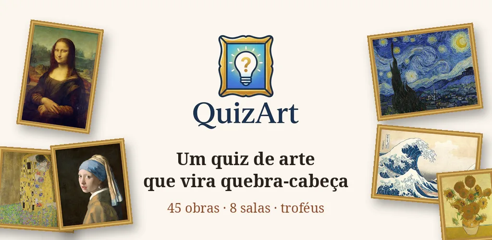
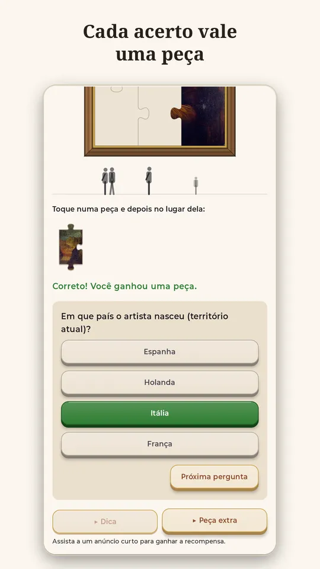
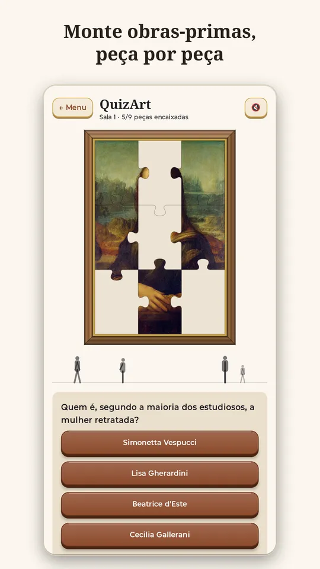
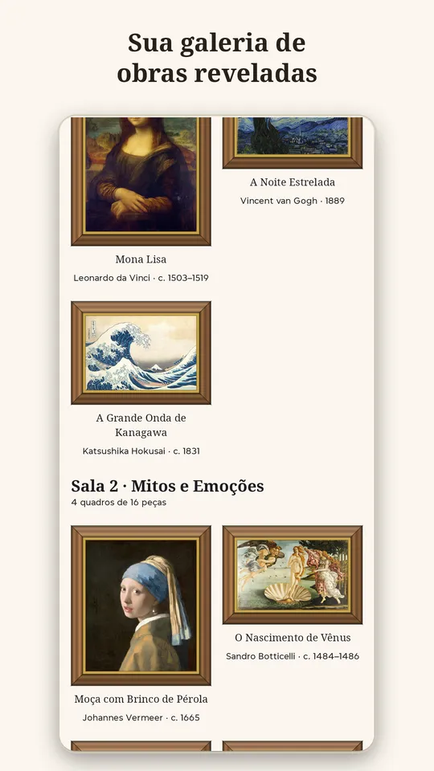
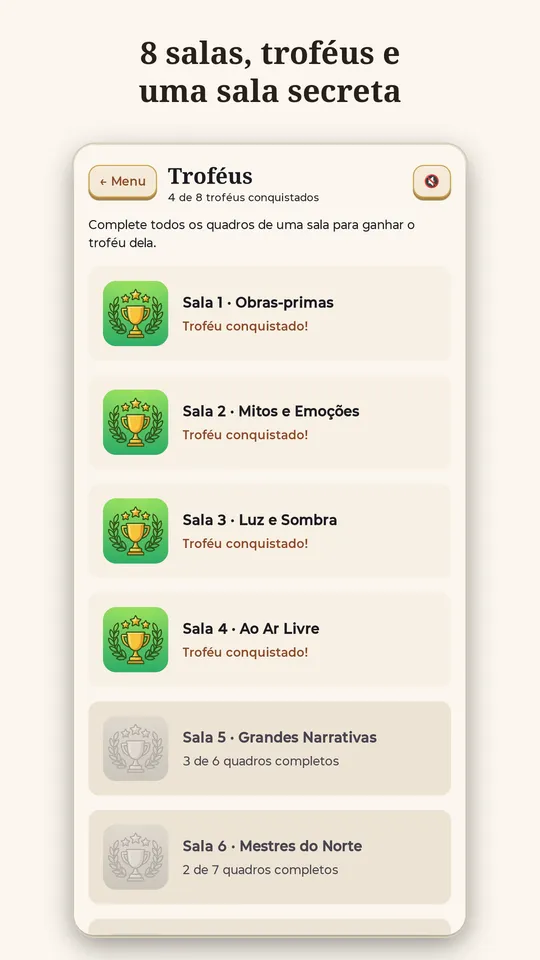

QuizArt: Quiz de Arte
Responda perguntas sobre grandes obras de arte e monte cada uma, peça por peça.
EM BREVE NA GOOGLE PLAY



Como funciona
- Responda perguntas sobre a obra: quem pintou, onde ela está, que técnica foi usada, o que aparece em cada detalhe.
- Cada acerto vale uma peça. Errou? A pergunta volta mais tarde, com as alternativas em outra ordem.
- Toque na peça e depois no lugar dela para montar o quadro.
- Quadros completos vão para a sua galeria, onde você pode ampliá-los e ler sobre a obra.
Um museu para explorar
- 45 obras de 37 artistas, de Leonardo da Vinci e Michelangelo a Van Gogh, Monet, Vermeer, Rembrandt e Klimt.
- Mais de 1.400 perguntas, em salas temáticas, com quebra-cabeças que crescem de 3×3 até 6×6 peças.
- Cada sala completa vale um troféu. E há uma sala secreta, que só se revela para quem completar o museu inteiro.
- Em português, inglês e espanhol. Grátis, com anúncios opcionais.
Quer jogar antes do lançamento?
Estamos montando a lista de testadores. Antes de o jogo chegar à loja, o Google pede que pelo menos 12 pessoas testem por 14 dias. Para participar, basta ter um celular Android:
- Comente QUERO num post do @quizartgame ou chame no direct.
- Quando o teste abrir, mandamos o link.
- Entre com sua conta Google e instale pela Play Store.
- Jogue por 14 dias e conte o que achou.